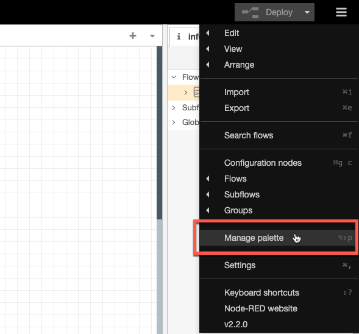
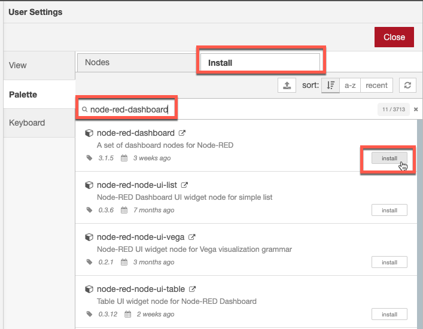
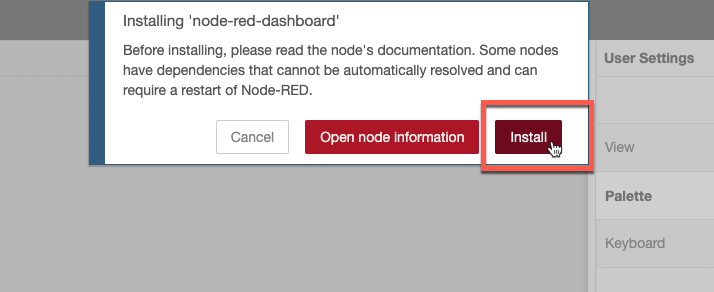
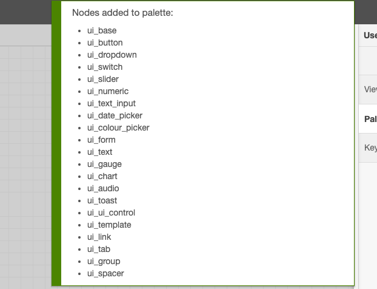

Objectives
In this Exercise you will learn how to:
- Install Node-RED locally
- Add required additional nodes
Before you begin:
This Exercise requires that you have:
- completed the pre-requisites required for all labs
Install Node-RED locally
This is a fairly easy step, as you just have to follow this guide: Running Node-RED locally
Once installed and started open the browser and start the Node-RED editor.
Attention
Make sure you are running Node-RED v3+, i.e. if you already have an existing older Node-RED instance installed locally then make sure to upgrade it before proceeding.
Add required additional nodes
Before loading the Node-RED script you need to add the required additional node libraries. Node-RED library dependencies: - node-red-dashboard - node-red-contrib-ui-upload - node-red-contrib-chunks-to-lines
- Click on the burger menu in upper right hand corner and select
Manage palette.  - Click on
Installand writenode-red-dashboardin the Search field - then click onInstall.  - Click on
Installagain.  - Wait until you see the new nodes have been installed. 
- Repeat step 2-4 for the other 2 libraries:
node-red-contrib-ui-uploadandnode-red-contrib-chunks-to-lines.
Congratulations you have successfully installed and prepared a local instance of Node-RED. You will now be ready to simulate a device or gateway in the following exercises.